Delivering innovative event-driven features to the hands of users means moving micro-integrations from development to production. That means getting the right event infrastructure in the right environment at the right time. The PubSub+ Event Portal makes that easier, faster and more resilient.
This code lab establishes connectivity between Event Portal, PubSub+ Event Broker (the runtime event broker that moves events aroudn ) and the Event Management Agent. Once you've established that connectivity, the next codelab explores reusing events you already have, automating event access and auto-generating code for Event Driven applications..
- Postman installed on a local machine, you can download it for free.
- Docker installed on a local machine. If you prefer to use Podman, please note that you will need to use different commands later in the lab.
- An empty Event Portal account. Don't have an Event Portal account? Get one for free.
Start a cloud event broker
- Login to PubSub+ Cloud and click on Cluster Manager
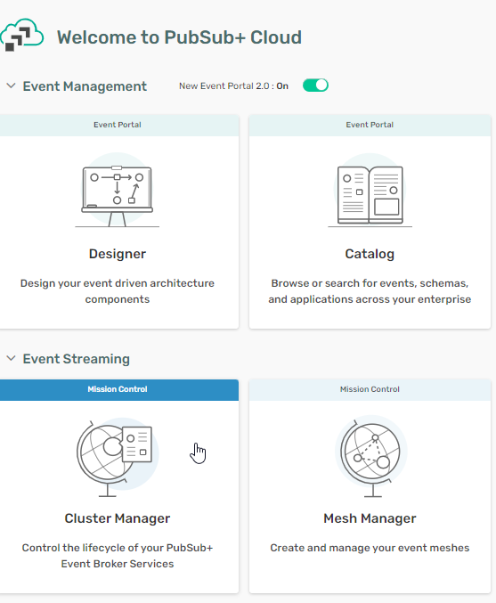 - Click on Create Service
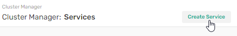 - In the Create Service window, name your service
aks-centralus-prodand pick the developer service type. Then click on the green Create Service button.
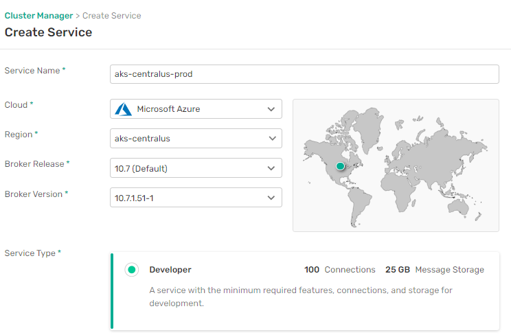 - After a few minutes, the deployment of the service completes and you should see something like this.
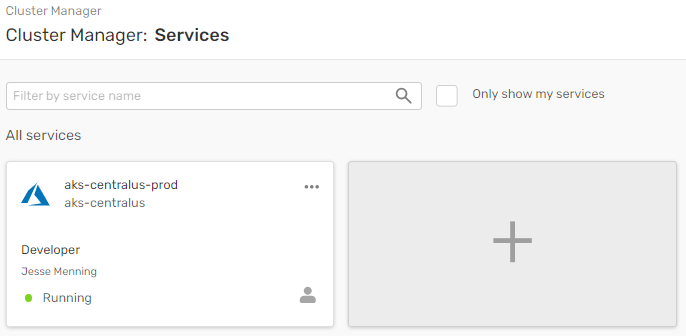
That's all it takes to create a running event broker.
Get connection info
To connect your runtime event broker to your design time model in Event Portal you'll need some information later. It's easier to get it now.
- Click on the newly created
aks-centralus-prodService button - Click on the Manage tab (1), then expand the SEMP - REST API section (2)
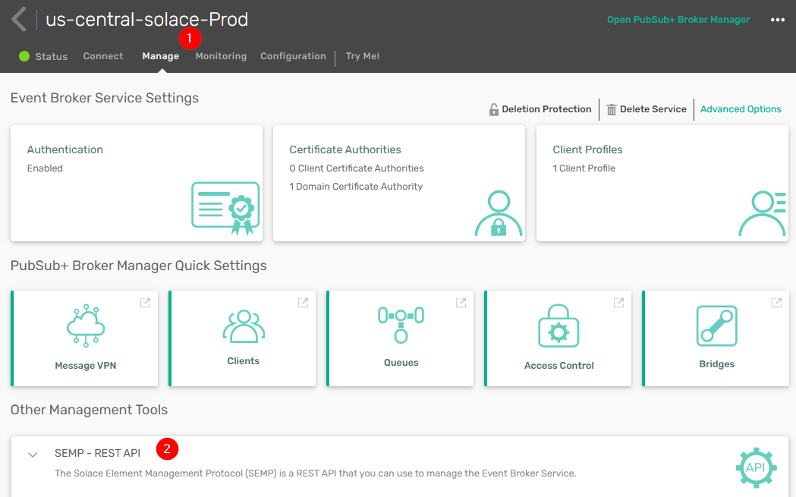 - Copy the following values into a text editor URL to the SEMP API (1) Message VPN name (2) Username (3) Password (4)
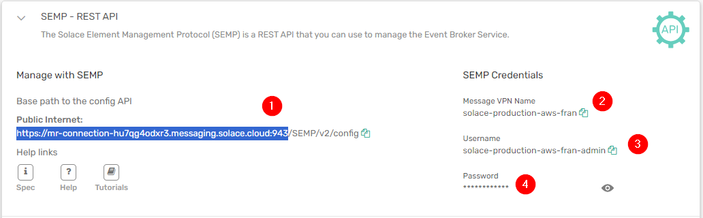
Get an Event Portal Access Token
- Log into your newly created Solace Platform Account
- Go to Token Management in Event Portal
<
- Create a token
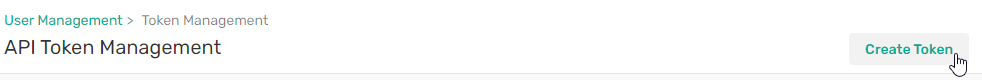 - Name the token
Demo Setup - Give the token full Read and Write access to:
Event Portal 2.0
Event Portal
Account Management
Environments - Click on Create Token
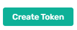 - Confirm that your token has the following permissions:
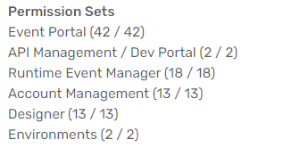 - Copy the token value and save it in a text file on your desktop.
Import scripts into Postman
- Launch the desktop Postman applicatication
- Download the Postman Collection and Environment files below:
Environment file
Script to populate Event Portal
Script to remove all objects from Event Portal - Drag the files from your hard drive to the left-hand column of Postman to import
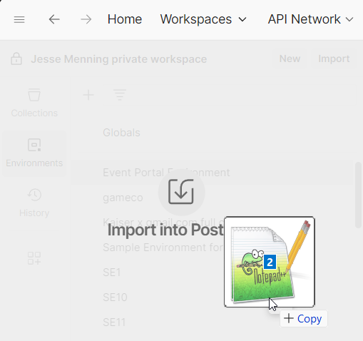
Configure Postman with your Event Portal token
- Open the environment variables tab (1), select the Event Portal Environment and (2) set it as the active Environmental variables.
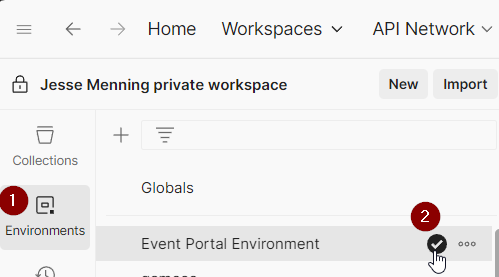
- Fill in the CURRENT VALUE column for api_key with the token you just generated in Event Portal.
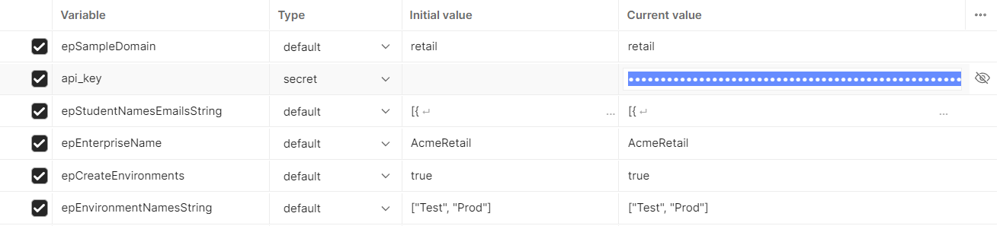 - Save the environment variables.
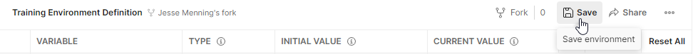
Run the Postman script
- Switch back to the Collections tab, hit the three dots next to "Generate and populate Event Portal demo", then click "Run collection"
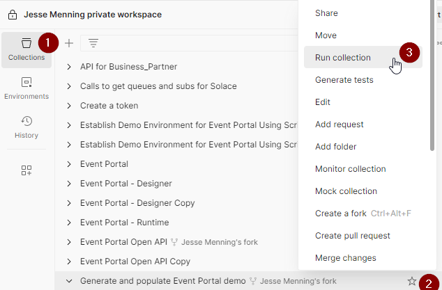 - On the next screen, click on Run Generate and populate Event Portal
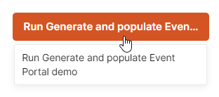 - Wait for the script to complete. Be patient, there are a lot of commands to run!
- To guide application promotion, Event Portal models all of your runtime environments. To do this, go to the profile icon in the lower left hand side, then click on Environments.
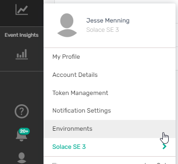 - To allow Event Portal to configure the runtime environment, click on the three dots, then select Enable Runtime Configuration. Do this for both Test and Prod.
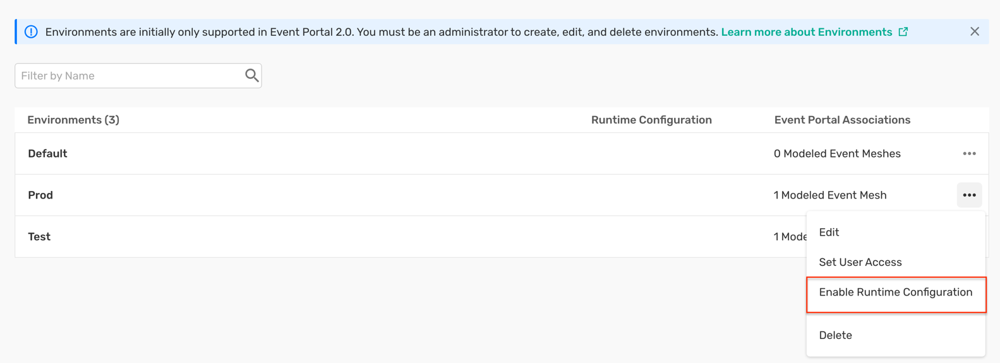
- Open the Runtime Event Manager (1), then go to the Event Management Agent tab (2). Click on the 3 dots next to your Event Managment Agent (the script created one for you). Then click on Edit Connection Details (4).
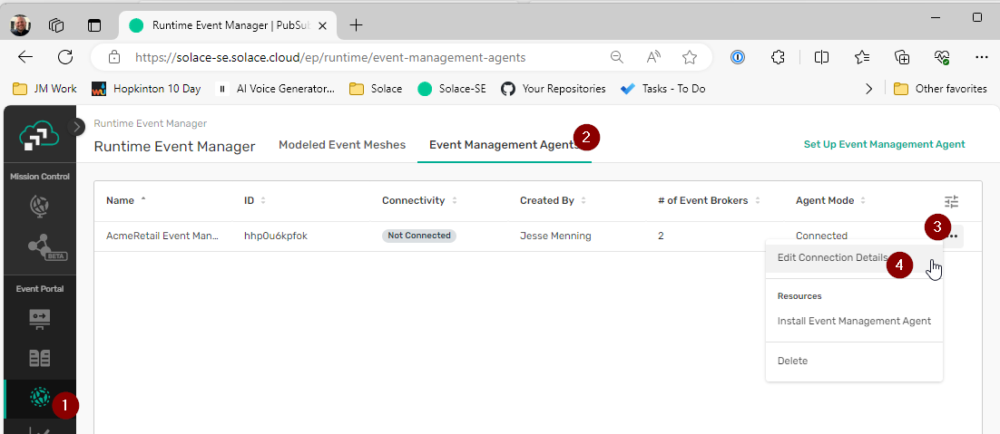 - On the next screen, click on the three dots next to the PROD-solace event broker, then click on "Edit Connection Details"
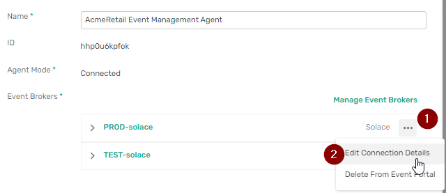 - Update the Message VPN (1), SEMP username (2) and SEMP URL (3) to point to your cloud broker. You will recall you saved them to a text pad in a previous step. You will use the admin password later. Once properly configured, click on Save Changes (4)
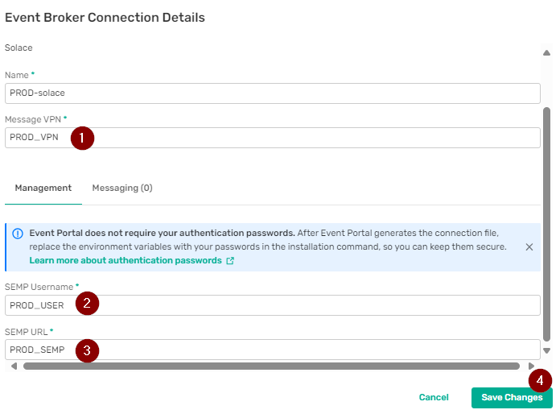
Click on the Save & Create connection file button as shown : 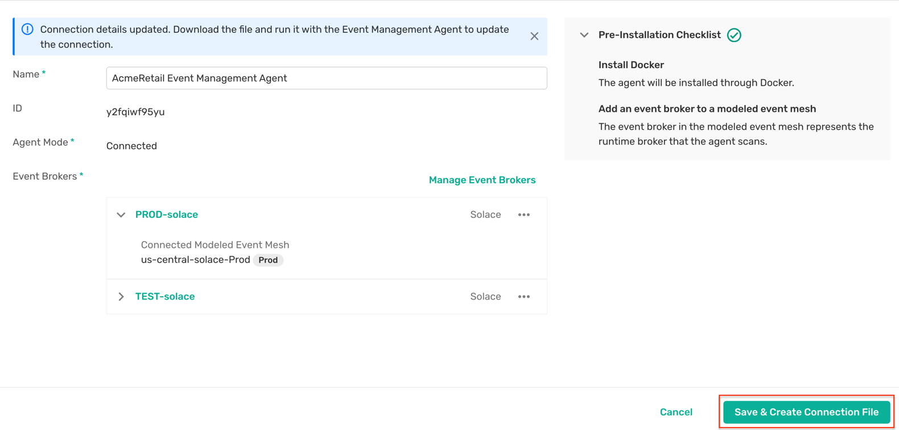
Now it's time to connect the Event Portal model and the runtime broker using the Event Management Agent.
- From the main Runtime Event Manager tab, click on the three dots and go to Install Event Management Agent
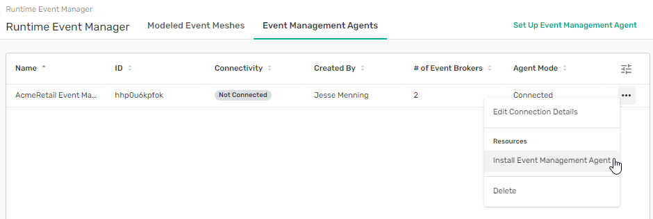 - Click on the download button and save the file to your hard drive.
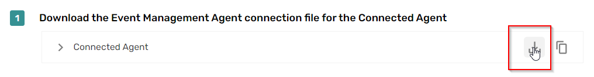 - Execute the following commands at the command line:
export PASSWORD_ENV_VAR_1=envVarPassword1
export PASSWORD_ENV_VAR_2=envVarPassword2
docker run -d -p 8180:8180 -v /absolute/path/to/your/ema/config.yml:/config/ema.yml \
--env PRODsolace_SOLACE_SEMP_PASSWORD=${PASSWORD_ENV_VAR_1} \
--env TESTsolace_SOLACE_SEMP_PASSWORD=${PASSWORD_ENV_VAR_2} \
--name event-management-agent solace/event-management-agent:latest
where PASSWORD_ENV_VAR_1 is the password for your cloud broker and /absolute/path/to/your/ema/config.yml points to your downloaded EMA configuration.
- Confirm the connection by running:
docker logs -f event-management-agent
The last line should be: Started event-management agent
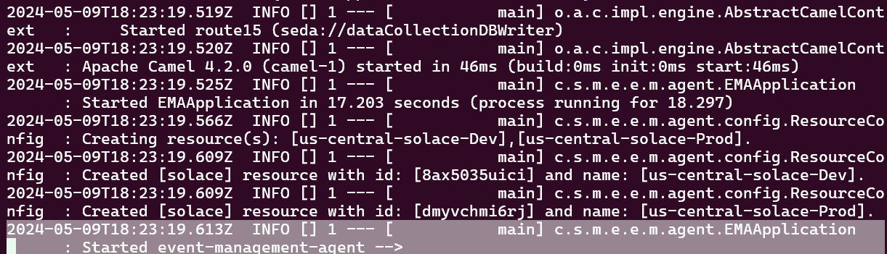
- Further confirm by going back to the Event Management Agents tab. Look to see your EMA has a green "Connected" label
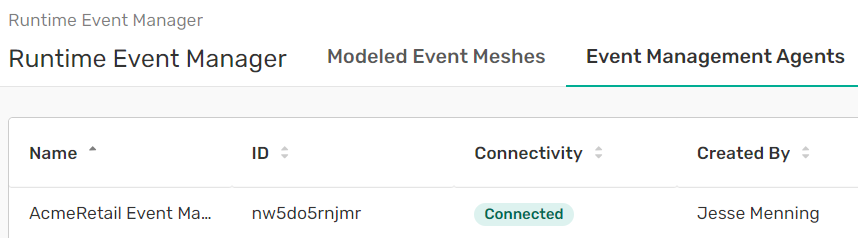
Since the EMA is used for both audit and for config push, we will confirm broker connectivity by running an audit.
- Go to Runtime Event Manager, then click on the
us-central-solace-Prodmodelled event mesh.
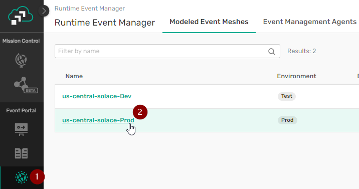 - Click on Audit, then "Run Discovery Scan"
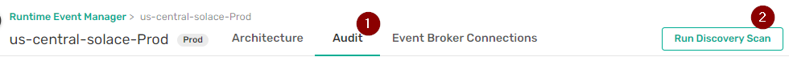 - Confirm you want to run a Discovery Scan
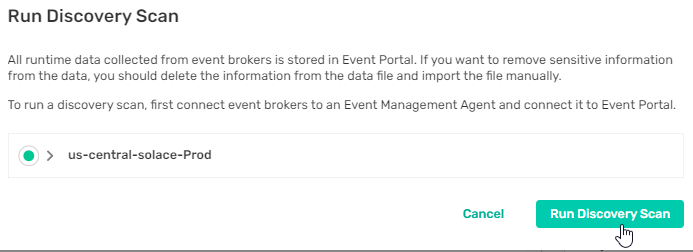 - If you see this message, you've successfully created a connection between the EMA and your event broker.
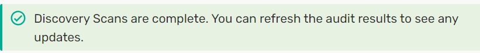
You are done!
Delivering innovative event-driven features to the hands of users means moving micro-integrations from development to production. That means getting the right event infrastructure in the right environment at the right time. Event Portal makes that easier, faster and more resilient.
Now that you've established that connectivity, you can explore how Event Portal reuses events you already have, automates event access and auto-generates code for Event Driven applications..

Thanks for participating in this codelab! Let us know what you thought in the Solace Community Forum! If you found any issues along the way we'd appreciate it if you'd raise them by clicking the Report a mistake button at the bottom left of this codelab.